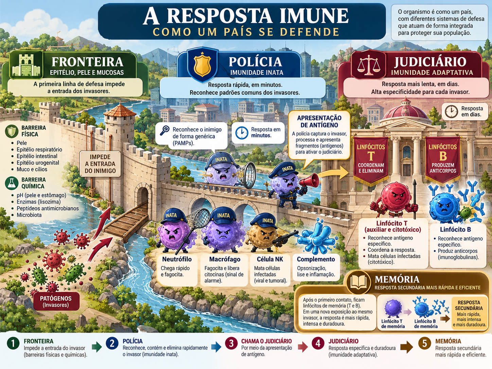

Imunologia AV1 Premium
Um webapp de estudo que preserva a profundidade do material original, mas reorganiza a leitura para reduzir carga cognitiva.

Não é um baralho de flashcards: é um curso visual condensado
A versão anterior ficou visual, mas rasa. Nesta reconstrução o texto volta ao centro. Os cards e imagens servem para ancorar a explicação; cada capítulo mantém a ordem conceitual do material-base e acrescenta estrutura, não substituição.
1. Comece pelo caso
O professor trabalha frequentemente a partir de um paciente, exame ou situação clínica. O capítulo faz o mesmo.
2. Entenda o mecanismo
Depois vem a sequência causal: quem reconhece, quem sinaliza, quem executa e qual consequência aparece.
3. Feche com prova
Erro comum, questão objetiva, justificativa das alternativas e conexão com as atividades reais da disciplina.
O que estudar aqui
O próprio material define como núcleo da AV1 as Partes 1–7, mais a Parte 16 e a Parte 17. A Aula 6 também exige vacinação básica: imunização ativa/passiva, plataformas e memória vacinal. Por isso este webapp segue exatamente esse mapa.
Fundamentos
Vocabulário, inata × adaptativa, humoral × celular, seleção clonal.
Inata e inflamação
PRRs, fagócitos, complemento, citocinas, adesão, mediadores e marcadores.
MHC e T
Processamento, coestimulação, seleção tímica, Th, CTL e memória.
B e vacinação
Anticorpos, centro germinativo, Tfh, plataformas vacinais e sorologia.
Correções que não devem virar pegadinha
Paracetamol não deve ser aprendido como AINE/anti-inflamatório clínico; o slide de PRRs contém uma família repetida/inexistente; a properdina estabiliza C3bBb, não é “uma etapa final” linear da via alternativa.
Profilaxia antitetânica depende do tipo de ferida e do histórico vacinal; e lactato elevado não define sozinho choque séptico. Essas correções ficam destacadas nos capítulos correspondentes.
Uma gramática visual única em todas as páginas
Azul
Mecanismo e sequência causal.
Verde
Clínica e aplicação prática.
Vermelho
Erro comum e correção.
Dourado
Memória, analogia e regra de ouro.